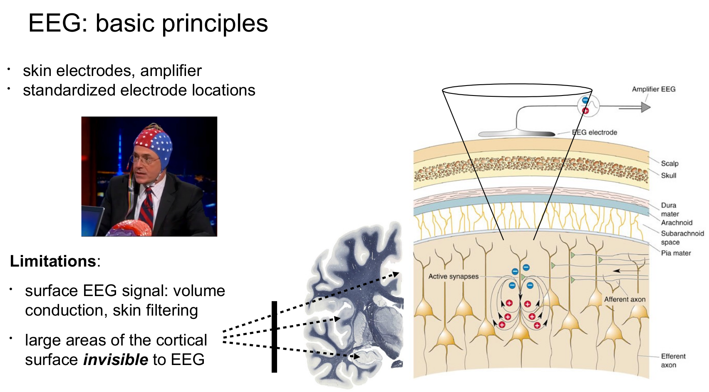
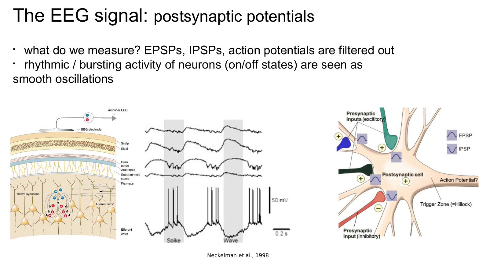
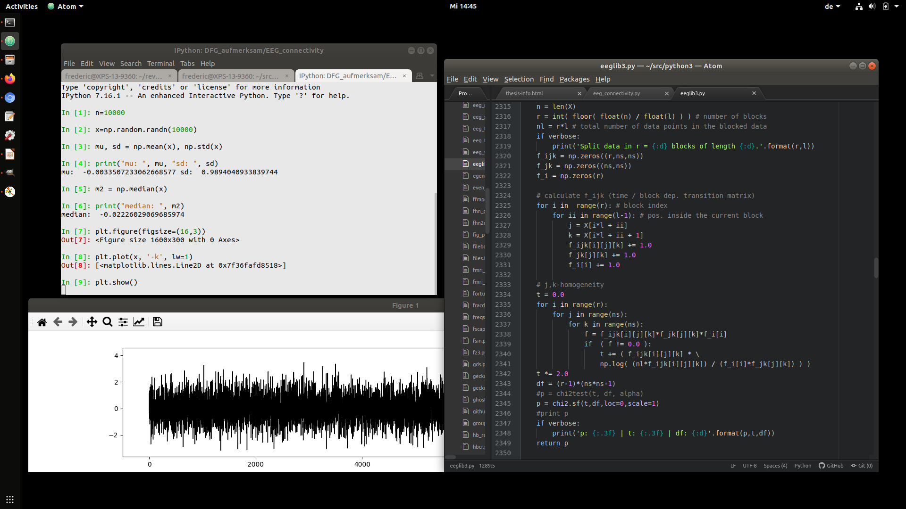
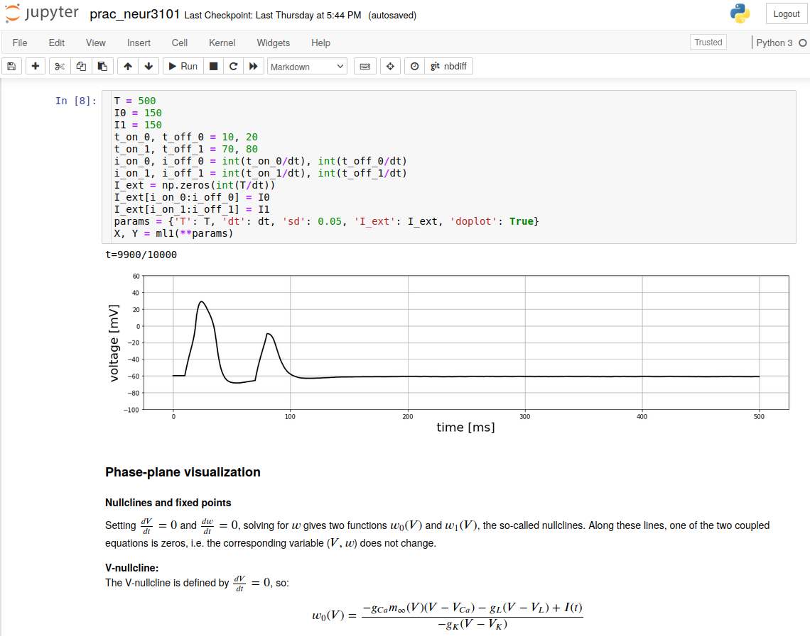

Looking to do Honours in 2024?
(or Masters or PhD)
Research information session on July 11, 4:45-7:30 pmComputational Physiology
Created by Frederic von Wegner
Which areas of physiology are covered?
- Electroencephalography (EEG)
- Patterns of activity in neuronal networks
- Wake-sleep transitions
- Cardio-respiratory signal analysis
EEG background (I)
EEG background (II)
EEG network activity
The dots represents the EEG electrodes, covering the skull surface.
Click here for more info...
Network models
In computational models, these patterns are studied in arbitrary network geometries
Wake & sleep

Cardio-respiratory signal analysis
Example notebook script
That's it, time to go back up!
Which skills do I need ?
This research requires writing your own computer programs
You don't have to be a skilled programmer, but a little experience with any programming language is a big plus!
Most of my research is written in
Python
Examples:
When I do research, my desktop usually looks like this
... or this
Which skills can I learn ?
- Clinical EEG applications (sleep, epilepsy)
- Python (programming language)
- Signal processing (EEG, and others)
- Computational models of neurons and networks
- Machine learning algorithms
Contact
Whom can I contact if I'm interested?
f.vonwegner@unsw.edu.au
Frederic von Wegner / UNSW